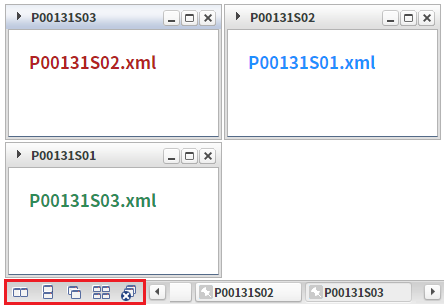
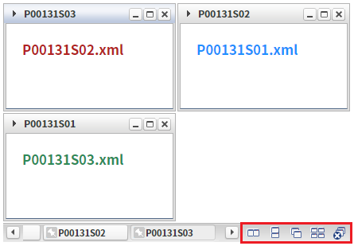
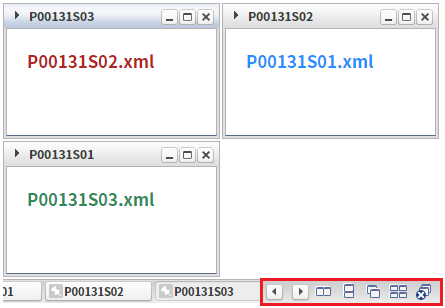
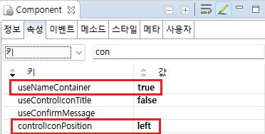

WindowContainer의 'controlIconPosition' 속성을 사용하여, 윈도우를 제어하는 아이콘들의 표시 위치를 설정한 예제입니다. 윈도우를 제어하는 아이콘들은 'useNameContainer' 속성을 'true'로 설정해야 표시됩니다.
controlIconPosition="left"
controlIconPosition="right"
controlIconPosition="allright"
예제 영역 '기본 설정 - controlIconPosition="left"'에서 테스트합니다.1
윈도우 제어 아이콘 위치를 확인합니다.
윈도우 제어 아이콘 영역이 왼쪽에 위치합니다.
Image 1.브라우저(Chrome) 실행 예시

예제 영역 'controlIconPosition="right"'에서 테스트합니다.1
윈도우 제어 아이콘 위치를 확인합니다.
윈도우 제어 아이콘 영역이 오른쪽에 위치합니다.
Image 2.브라우저(Chrome) 실행 예시

예제 영역 'controlIconPosition="allright"'에서 테스트합니다.1
윈도우 제어 아이콘 위치를 확인합니다.
윈도우 선택용 화살표들과 윈도우 제어 아이콘 모두 오른쪽에 위치합니다.
Image 3.브라우저(Chrome) 실행 예시

1
WindowContainer의 속성을 설정합니다.
[필수] controlIconPosition="left"
[default:left, right, allright] windowContainer 제어 아이콘의 위치. useNameContainer="true"인 경우 동작.
"left" : 윈도우 선택을 위한 화살표들을 제외한 윈도우 제어 아이콘들만 왼쪽에 표시.
"right" : 윈도우 선택을 위한 화살표들을 제외한 윈도우 제어 아이콘들만 오른쪽에 표시.
"allright" : 윈도우 선택용 화살표들과 윈도우 제어 아이콘 모두 오른쪽에 표시.
[필수] useNameContainer="true"
[default:false, true] controlIconPosition 속성을 사용하기 위해 필수 지정
Image 4.웹스퀘어 스튜디오의 Component View 예시

Example 1.Source
<!-- windowContainer 의 소스 본문 예시 --> <w2:windowContainer controlIconPosition="left" useNameContainer="true"> <!-- 중략 --> </w2:windowContainer>
controlIconPosition
useNameContainer